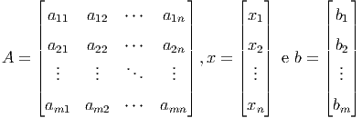

Muitos problemas da engenharia, física e matemática estão associados à solução de sistemas de equações lineares. Nesse capítulo, tratamos de técnicas numéricas empregadas para obter a solução desses sistemas. Iniciamos por uma rápida revisão do Método de Eliminação Gaussiana do ponto de vista computacional. No contexto de análise da propagação dos erros de arredondamento, introduzimos o Método de Eliminação Gaussiana com Pivotamento Parcial, bem como, apresentamos o conceito de condicionamento de um sistema linear. Então, passamos a discutir sobre técnicas iterativos, mais especificamente, sobre os Métodos de Jacobi e Gauss-Seidel.
Considere o sistema de equações lineares:
 |
onde:
 |
Salvo especificado ao contrário, assumiremos ao longo deste capítulo que a matriz dos coeficientes  é uma matriz real não-singular.